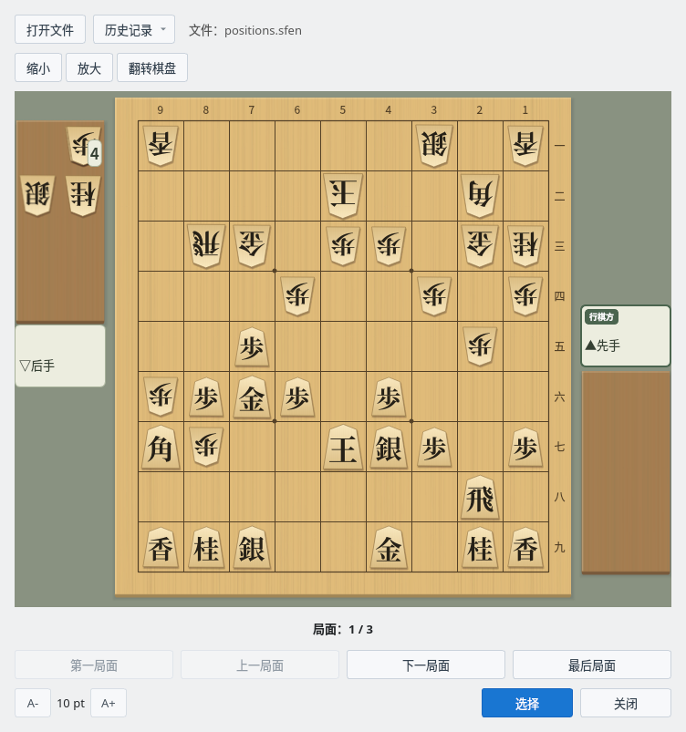
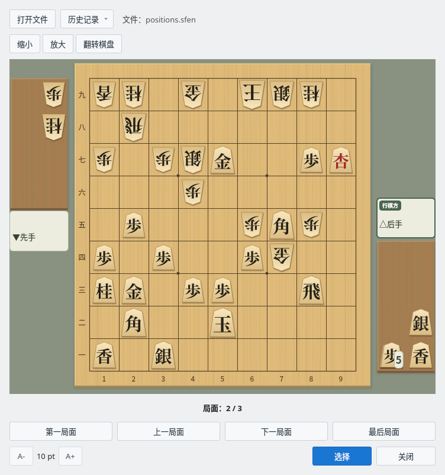
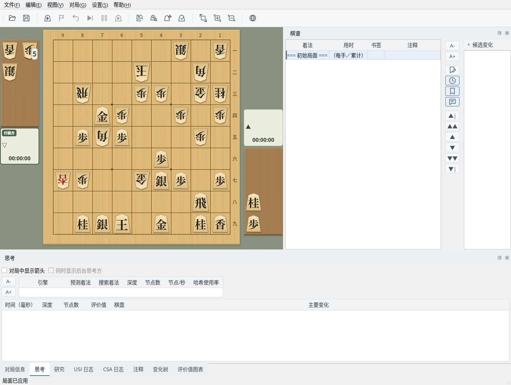

在棋盘上浏览 SFEN 格式的局面集，并导入主窗口
截图在 Linux 上以简体中文界面拍摄。
准备每行写有一个 SFEN 局面的文本文件
局面集文件是每行写一个局面的文本文件（.sfen 或 .txt）。空行和以“#”开头的行（注释）会被跳过，因此“诘棋局面生成器”保存的文件也可以直接打开。
无法读取为局面的行（棋盘或持驹写法有误、包含无法走出的着法等）会被跳过，并在文件名旁显示跳过的行数。如果所选文件中一个局面也没有，会显示提示信息，当前显示的局面集保持不变。
# 铃木 vs 山田（2026年10月5日）中的3个局面
l5s1l/4k2b1/1rg1pp1gn/3p2p1p/2P4p1/pPGP1P3/Bp2KSP1P/7R1/LNS2G1NL b sn4p 63
6s1l/4k2b1/1r2pp1gn/2Gp2p1p/1PbP3p1/5P3/+lp2gSP1P/7R1/1NSK1G1NL w NPsl5p 78
6s1l/4k4/4pp1gn/2pp2p1p/1BrP3p1/1sP2P3/K1+b1gSP1P/3+l3R1/5G1NL b GSLP2n5p 101在查看器中逐一查看局面
选择“编辑”→“SFEN 局面集查看器”打开查看器。查看器是独立于主窗口的窗口，打开期间也可以操作主窗口。
点击“打开文件”选择局面集文件后，棋盘上会显示第1个局面。持驹显示在驹台上，下一手的一方以对局者名称上的“行棋方”标记表示，棋盘下方显示“局面：1 / 3”等当前是第几个局面。点击“历史记录”可以打开最近使用的文件（最多5个）。

SFEN 局面集查看器：打开 positions.sfen，显示第1个局面（先手行棋）
使用“第一局面”“上一局面”“下一局面”“最后局面”切换局面。点击“翻转棋盘”可从后手一方的视角查看棋盘。
使用“放大”“缩小”（或在棋盘上按住 Ctrl 滚动鼠标滚轮）调整棋盘大小时，窗口也会随棋盘调整大小。棋盘大小在下次打开时继续使用。左下角的“A-”“A+”用于调整按钮和文字的大小。

翻转棋盘：从后手视角查看第2个局面（后手行棋）
将选中的局面导入主窗口
显示要导入的局面后点击“选择”，该局面会成为主窗口的初始局面，棋谱只保留初始局面。之后可以从该局面开始研究，也可以在对局设置的“初始局面”中选择“当前局面”开始对局。
如果主窗口有尚未保存的棋谱，会先询问是否保存。导入的局面作为新的棋谱处理，点击“保存”时不会写入之前打开的棋谱文件，而是打开“另存为”。查看器会保持打开，可以接着导入其他局面。

主窗口：将第2个局面作为初始局面导入